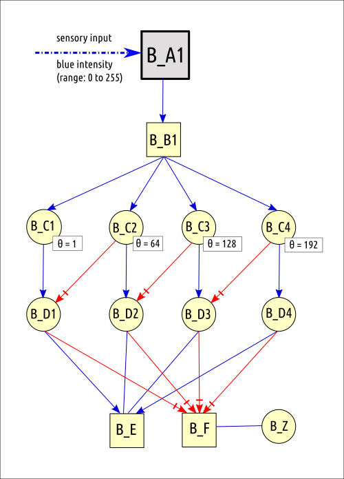
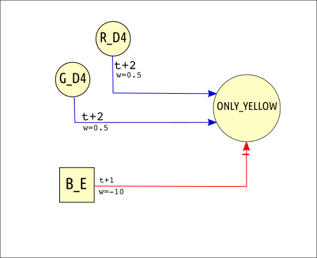
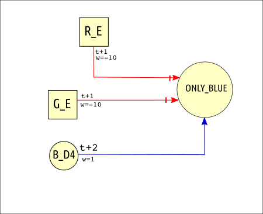
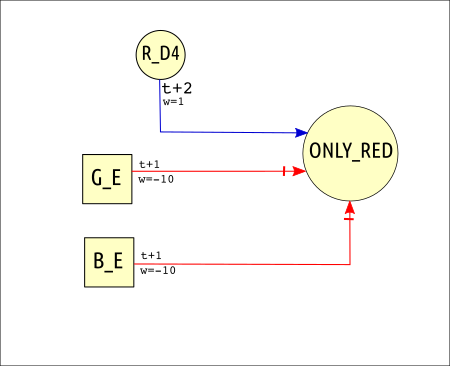
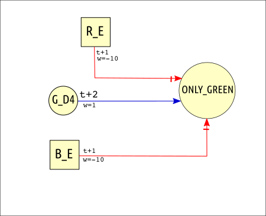
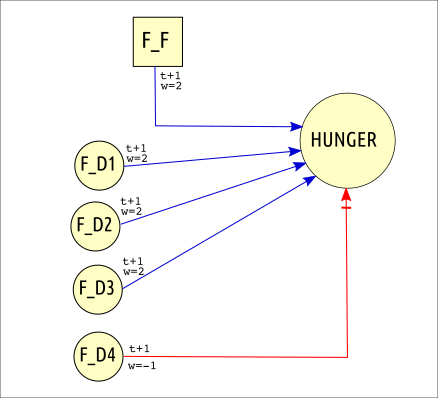
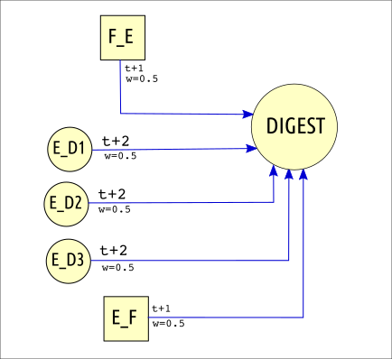
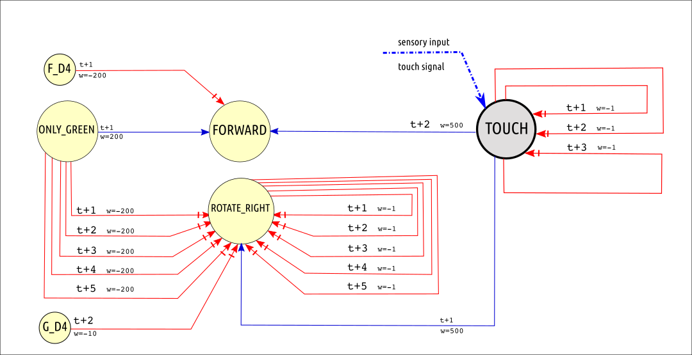
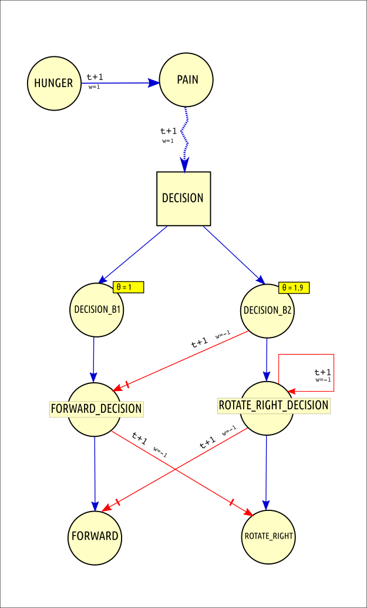

An autonomous subsystem is designed for 'virtual digestion' of the food eaten by Alfie.
The autonomous subsystem is required to generate and manage internal stimuli such as food level,energy level,etc.
(The need for autonomous subsystem is described in section 6.5)
This subsystem will perform the following functions :
• activate HUNGER when food level is low
• trigger DIGEST motor action when EnergyLevel is less and food is available
• inhibit HUNGER when FOOD level is maximum
| Neuron Category | Neuron names |
| Neurons for incoming stimuli with non-binary values ( 65 ) |
Red, Green & Blue sensory input stimuli have an input intensity range of ( 0 to 255 ). Food-level & Energy-level input stimuli have an input intensity range of ( 0 to 100 ). For each of these stimuli, we need to detect their approximate intensity using an intensity detection circuit. An intensity detection circuit that groups incoming values into four "range buckets" will have 13 neurons. So, for five input stimuli, the total number of neurons = 5 * 13 = 65 neurons. (See section 7.2.6 for details of each intensity detection circuit) RED intensity detection circuit has the following neurons : R_A1,R_B1,R_C1,R_C2,R_C3,R_C4,R_D1,R_D2,R_D3,R_D4,R_E,R_F,R_Z GREEN intensity detection circuit has the following neurons : G_A1,G_B1,G_C1,G_C2,G_C3,G_C4,G_D1,G_D2,G_D3,G_D4,G_E,G_F,G_Z BLUE intensity detection circuit has the following neurons : B_A1,B_B1,B_C1,B_C2,B_C3,B_C4,B_D1,B_D2,B_D3,B_D4,B_E,B_F,B_Z FOOD intensity detection circuit has the following neurons : F_A1,F_B1,F_C1,F_C2,F_C3,F_C4,F_D1,F_D2,F_D3,F_D4,F_E,F_F,F_Z ENERGY intensity detection circuit has the following neurons : E_A1,E_B1,E_C1,E_C2,E_C3,E_C4,E_D1,E_D2,E_D3,E_D4,E_E,E_F,E_Z |
| Neurons for incoming stimuli with binary values as input ( 1 ) |
TOUCH |
| Neurons for derived data ( 4 ) |
ONLY_RED ONLY_BLUE ONLY_GREEN ONLY_YELLOW |
| Motor action neurons ( 3 ) |
FORWARD
ROTATE_RIGHT DIGEST |
| Motivation circuit neurons ( 7 ) |
PAIN HUNGER DECISION DECISION_B1 DECISION_B2 ROTATE_RIGHT_DECISION FORWARD_DECISION |
| 1. Intensity detection circuits for detecting intensity level of red/green/blue in incoming light pixel | |||||||||||||||||||||||||||||||||||||||||||
|

This intensity detection circuit is similar to the example seen in section 4.4. The consequence of this circuit is as follows:
|
|||||||||||||||||||||||||||||||||||||||||||
| 2. Intensity detection circuits for detecting Food-level and Energy-level | |||||||||||||||||||||||||||||||||||||||||||
|
|||||||||||||||||||||||||||||||||||||||||||
| 3. Colour detection circuits to detect strong levels of RED,BLUE,GREEN and YELLOW colours | |||||||||||||||||||||||||||||||||||||||||||
|
• When Red and Green are at maximum levels, and Blue is zero, then ONLY_YELLOW is activated • When Red is at maximum level, Green is zero and Blue are zero, then ONLY_RED is activated • When Blue is at maximum level, Red is zero and Green are zero, then ONLY_BLUE is activated • When Green is at maximum level, Red is zero and Blue are zero, then ONLY_GREEN is activated     |
|||||||||||||||||||||||||||||||||||||||||||
| 4. Hunger and digestion circuits | |||||||||||||||||||||||||||||||||||||||||||
|
• When Food is at maximum(F_D4), then HUNGER is inhibited. If Food is zero(F_F) or Food is low(F_D1,F_D2,F_D3) , then activate HUNGER neuron. • If (Energy i is zero(E_F) or Energy is low(F_D1,F_D2,F_D3) ) AND Food >0 (F_E), then activate DIGEST neuron.   |
|||||||||||||||||||||||||||||||||||||||||||
| 5. Food-seeking innate connection and Touch reflex | |||||||||||||||||||||||||||||||||||||||||||
|
 Behaviour created by this neural circuit : • Temporally sharpen TOUCH input signal, ie., avoid continous excitation, just fire once and inhibit immediate self-excitation • If TOUCH detected, then rotate-right only once and then go-forward once. • Avoid rotating repeatedly, limit consecutive rotations • If colour seen is pure GREEN (food) , then send a very strong signal to move forward and inhibit rotate_right strongly for the next few timesteps. • Prevent rotate right at same time as ONLY_GREEN fires |
|||||||||||||||||||||||||||||||||||||||||||
| 6. Motivation and Decision circuit | |||||||||||||||||||||||||||||||||||||||||||
|
 Behaviour created by this neural circuit : • When Food level is less than 75, one of F_D1, F_D2 or F_D3 neurons is activated, triggering HUNGER neuron activation. • HUNGER neuron which inturn activates PAIN neuron • PAIN neuron then activates the DECISION neuron with a fluctuating random weight, resulting in an input to DECISION neuron of between 1.0 to 2.0 • The output from DECISION neuron is sent to DECISION_B1 and DECISION_B2 neurons. DECISION_B1 fires if threshold 1.0 is crossed,and DECISION_B2 fires only if a higher threshold of 1.9 is crossed. • This creates the probability of DECISION_B1 firing 90% of the time and DECISION_B2 firing 10% of the time. • In this particular environment, moving forward 90% of the time provides a higher survival advantage compared to moving forward 50% of the time, that is the reasoning behind assigning threshold 1.9 for DECISION_B2 neuron. • Since DECISION_B1 triggers FORWARD motor action and DECISION_B2 triggers ROTATE_RIGHT motor action, FORWARD motor action is 90% likely to be activated, and ROTATE_RIGHT motor action is 10% likely to be activated. • So finally, depending on whether FORWARD or ROTATE_RIGHT is activated, Alfie moves or rotates accordingly. |
|||||||||||||||||||||||||||||||||||||||||||
| No. | Scenario | Resultant behaviour |
| 1 | Click "Yellow light flash" button to shine yellow light in the Alfie's eye. |
The visual sensor receives yellow light ie., (R_A1=255, G_A1 = 255, B_A1=0)
This triggers the yellow-colour detection circuit and causes ONLY_YELLOW neuron to be activated after a few epochs and the ONLY_YELLOW neuron flashes in the UI |
| 2 | Click "Blue light flash" button to shine blue light in the Alfie's eye. |
The visual sensor receives blue light ie., (R_A1=0, G_A1 = 0, B_A1=255)
This triggers the blue-colour detection circuit and causes ONLY_BLUE neuron to be activated after a few epochs and the ONLY_BLUE neuron flashes in the UI |
| 3 | Click "Place food" button to place green coloured food in a random place in the environment. Repeat this so that Alfie eats more food ,until foodlevel > 100 and energylevel > 100 |
When FoodLevel is high, it inhibits the HUNGER neuron.
This in turn inhibits PAIN, which inturn inhibits the DECISION neuron from firing. So Alfie just stays where it is, unmotivated and idle ; Until energy level and food level drops over the next dozen epochs. |
| 4 | Click "Lights off" radio button. This prevents any light from reaching eye, RGB values in incoming datastream will be zero | Alfie explores environment even if it is dark. But less likely to survive in the dark due to inability to see GREEN coloured food and move forward towards it. |
| 5 | Alfie sees green coloured food | When Alfie sees green coloured food , the input ( R_A1=0, G_A1=255, B_A1=0 ) is sent as visual input. The ONLY_GREEN neuron is activated after a few time steps, which inturn strongly triggers FORWARD motor action and strongly inhibits ROTATE_RIGHT motor action Alfie keeps moving until it collides with the food and consumes it. |
| 6 | Alfie hits wall | TOUCH neuron is activated (just) once. The TOUCH neuron activates ROTATE_RIGHT motor in the next timestep and FORWARD motor action in the second timestep. |
{kind=link}
{kind=link}
{kind=link}
{kind=link}
{kind=link}
{kind=link}
{kind=link}
{kind=link}
{kind=link}
{kind=link}
{kind=link}
{kind=link}
{kind=link}